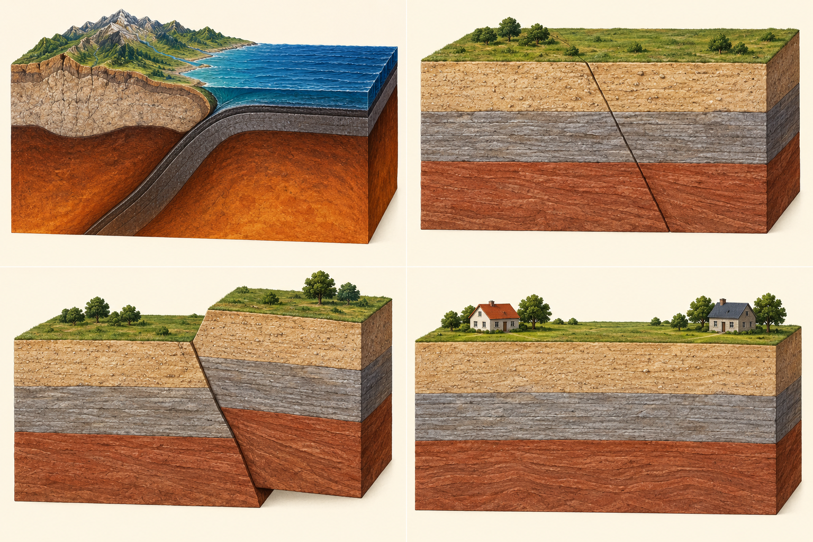
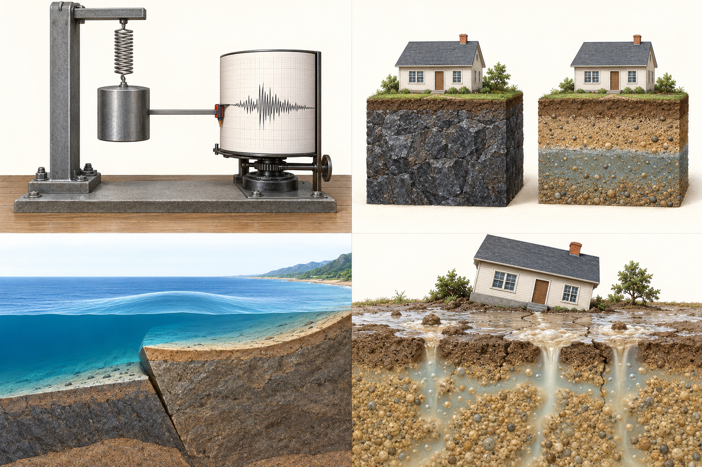

中1 理科｜地震
地震
中学1年・地学
地震
岩盤のずれが、 遠くの地面を揺らす。

中1 理科｜地震
岩盤がずれると、揺れが生まれる
力が加わり、岩盤にひずみがたまる
岩盤が耐えられる限界をこえる
岩盤が急にずれ、揺れが周囲に伝わる
ゆっくり加わる力で、岩盤にひずみがたまる。
急なずれで起こる地面の揺れが地震。
岩盤が割れてずれた面を断層という。
中1 理科｜地震
プレートの動きが、岩盤に力を加える
海のプレートが沈み込む
陸の内部にも、断層がある
プレートは、地球の表面をおおう岩盤。
境界付近でも、プレートの内部でも地震が起こる。
中1 理科｜地震
震源と震央は、どこが違う？
赤：地下の出発点青：その真上の地表黒：観測地点
地下で破壊が始まった場所が震源。
震源の真上にある地表の地点が震央。
震源から観測地点までが震源距離。
中1 理科｜地震
地震計は、地面の動きを記録する

地面とともに、装置の台が動く。
おもりとの相対的な動きを、線として記録する。
地震の揺れを記録する装置が地震計。
中1 理科｜地震
2種類の波は、同時に出発する
同じ震源から、同時に出発
P波
S波
震源観測地点まで 48 km
発生直後8秒後：P波が到着16秒後：S波が到着
一定の速さの教材モデル：P波 6 km/s、S波 3 km/s。実際の地中では速さが変わる。
P波は速く伝わり、先に届く。
S波は遅く伝わり、後から届く。
別々の地震ではなく、同じ地震から出た波。
中1 理科｜地震
最初は小さく、後から大きく揺れる
初期微動：P波による最初の小さな揺れ。
主要動：S波による後の大きな揺れ。
初期微動継続時間：2つの到着の差。
中1 理科｜地震
遠い地点ほど、到着の差が広がる
A：48 km → P波8秒、S波16秒。
B・Cでは、2つの到着の差がさらに大きい。
震源距離が長いほど、初期微動継続時間も長い。
中1 理科｜地震
記録を、時間と距離のグラフにする
同じ距離なら、P波の方が早く到着する。
同じ時間なら、P波の方が遠くまで進む。
直線の傾きが大きい方が、速い波。
中1 理科｜地震
速さは「距離の差 ÷ 時間の差」
A→B：距離の差は 96−48＝48 km。
P波：48 ÷（16−8）＝6 km/s。
S波：48 ÷（32−16）＝3 km/s。
中1 理科｜地震
揺れた時刻より前に、地震は起きている
地点Aの震源距離：48 km
地震発生→ 8秒かけて伝わる →P波到着
10時00分08秒
10時00分08秒
P波の速さ：6 km/s
伝わる時間：48 ÷ 6＝8秒。
到着時刻から8秒を引く。
発生時刻は10時00分00秒。
発生時刻は10時00分00秒。
中1 理科｜地震
時間差から、震源までの距離を考える
| 地点 | 震源距離 | 初期微動継続時間 |
|---|---|---|
| A | 48 km | 8秒 |
| B | 96 km | 16秒 |
| C | 144 km | 24秒 |
継続時間が2倍になると、距離も2倍。
初期微動が12秒間続いた地点Dは、何km？
48 ×（12 ÷ 8）＝72 km。
中1 理科｜地震
地震の規模と、その場所の揺れは別
1つの地震
M 6.0
M 6.0
地点A
震度5弱地点B
震度3地点C
震度4M（マグニチュード）：地震そのものの規模。
震度：ある地点での揺れの強さ。
同じ地震でも、地点によって震度は違う。
Mが1大きい → エネルギーは約32倍。
中1 理科｜地震
震度は、0から7までの10階級
0
1
2
3
4
5弱
5強
6弱
6強
7
弱い揺れ強い揺れ
5と6は、それぞれ「弱」「強」に分かれる。
震度は全部で10階級。Mとは数え方も違う。
中1 理科｜地震
同じ距離でも、揺れ方は変わる
震源からの距離だけでなく、地盤も関係する。
やわらかい地盤では、揺れが大きくなることがある。
「遠いから必ず安全」とは言えない。
中1 理科｜地震
地面の揺れが、別の災害も起こす
津波：海水が大きく動く
液状化：地盤が支えを失う
海底の上下の動きで海水が動き、津波になることがある。
水を多く含む砂の地盤が揺れ、液体のようになる。
中1 理科｜地震
緊急地震速報は、発生後に知らせる
震源に近い地震計が、先に届いたP波を検知する。
強い揺れの到着前に知らせ、身を守る時間をつくる。
震源に近い場所では、速報が間に合わないこともある。
中1 理科｜地震
覚えること
起こる場所・原因記録の読み方揺れの表し方
岩盤の急なずれで地震速いP波 → 初期微動M → 地震の規模
震源＝地下の出発点遅いS波 → 主要動震度 → 地点の揺れ
震央＝震源の真上距離が長い → 時間差が長い震度は10階級
次は「地層」。地下の重なりから、土地の過去を読み解く。